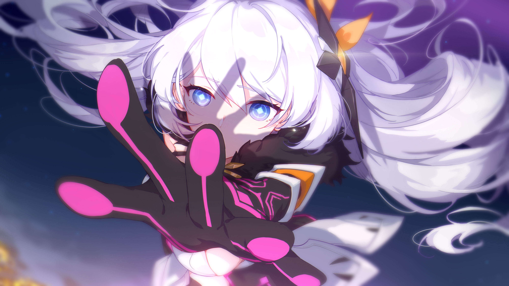

HONKAI IMPACT 3RD
Honkai Impact 3rd adalah game free-to-play aksi permainan peran 3D mobile game yang dikembangkan oleh miHoYo. Merupakan seri ketiga dari Seri Honkai dan kelanjutan dari Houkai Gakuen, menggunakan banyak karakter yang sama dari judul sebelumnya, dengan cerita baru yang terpisah. Game ini dikenal menggabungkan elemen-elemen dari berbagai genre, dari hack-and-slash, stimulasi sosial, bullet hell, platforming, shoot ‘em up, dan dungeon crawling, yang terdapat di dalam mode single player dan multiplayer.
Game ini mula-mula menarik perhatian banyak penggemar di Asia sebelum menyebar lebih luas secara global: pertama dirilis di Tiongkok di akhir tahun 2016, dan mencapai 1 juta jumlah unduh setelah 11 hari perilisan di Jepang, dan mencapai 35 juta jumlah unduh secara global pada 12 April,
2018. Game ini telah dirilis di Korea, Taiwan, Asia Tenggara, Amerika Utara, dan Eropa. Game ini mendukung berbagai bahasa, termasuk di antaranya Mandarin Sederhana, Mandarin Tradisional, Inggris, Jepang, Korea, Vietnam, Thailand, Prancis, Jerman, dan Bahasa Indonesia.
Selain sebagai game mobile, kisah Honkai Impact 3 tersebar ke medium-medium tambahan, sebagai pengabdiannya ke budaya ACG (Anime Comic Game) Jepang. Produk-produk tersebut terdiri dari seri anime, beberapa seri manhua, dan berbagai video promosi.
Cara Bermain
Cara bermain utama Honkai Impact 3 adalah mengendalikan sebuah tim yang terdiri dari 3 karakter, yang disebut “Valkyrie”, untuk melawan berbagai musuh. Selama pertarungan, pemain dapat dengan bebas menggerakkan karakter mereka di medan pertarungan dan berganti karakter di antara tiga Valkyrie yang dikerahkan secara langsung untuk menyesuaikan dengan beragam jenis musuh yang dihadapi. Masing-masing Valkyrie memiliki skill serangan, hindaran, pergantian, dan ultimate yang unik, dan masing-masing Valkyrie memiliki tipe berbeda yang berfungsi seperti gunting-batu-kertas untuk melengkapi peran-peran yang diperlukan di dalam tim. Status dan skill Valkyrie bisa diatur dan dikustom dengan berbagai perlengkapan. Perlengkapan Stigmata, senjata, dan Valkyrie dapat diperoleh dari pertarungan, sistem penggabungan, atau sistem gacha.
Honkai Impact 3rd, Kiana Kaslana

Cerita
Kisah Honkai Impact 3 terjadi di zaman sekarang, namun di dalam versi dunia yang dilanda oleh bencana alam yang disebabkan oleh "Honkai". Kata yang berasal dari kata "Houkai", yang dapat diterjemahkan secara kasar menjadi "Kehancuran". Honkai adalah sesuatu kekuatan tidak memiliki massa, tetapi dipengaruhi oleh gravitasinya sendiri. Saat Honkai tenggelam ke dalam gravitasinya sendiri, ledakan energy terbentuk dan disebut dengan “impact”. Impact berkisar dari skala kecil yang dapat menyebabkan gempa bumi atau letusan gunung, sampai ke level yang membahayakan suatu planet. Honkai dapat berinteraksi dengan zat, bersatu, bermutasi, dan meniru.
Honkai dikendalikan oleh makhluk tak dikenal yang hidup di luar dimensi ketiga. Dia memilih tubuh-tubuh manusia, yang disebut dengan "Herrscher", makhluk separuh manusia, separuh honkai yang memiliki insting untuk membunuh bagian manusianya, dan tunduk di hadapan kehendak Honkai. Yang membentuk tujuan kehidupan mereka, yaitu membasi kaum manusia. Pada inti dasarnya, Herrscher adalah kristal honkai yang dapat meniru kekuatan Herrscher
Honkai Impact 3rd , Theresa Apocalypse
apabila digunakan. Inti-inti Herrscher ini banyak diincar oleh berbagai organisasi karena kekuatannya yang besar, dan potensinya sebagai senjata perang. Setelah berhasil bertahan hidup melalui ledakan Honkai, berbagai organisasi terbentuk, di antaranya Schicksal, sebuah organisasi global yang kini dipimpin oleh Overseer Otto Apocalypse yang memulai program pelatihan wanita-wanita yang disebut “Valkyrie” guna melawan Honkai.
Di sisi yang bertentangan dengan mereka terdapat organisasi Anti-Entropy, yang terbentuk dari Schicksal cabang Amerika Utara, lain dengan cara Schicksal, mereka menciptakan robot-robot berteknologi mutakhir dan berbiaya besar. Selain kedua organisasi besar tersebut, juga terdapat organisasi dan kekuatan-kekuatan lain yang mencari solusi untuk mengatasi ledakan Honkai yang tidak terelakkan.